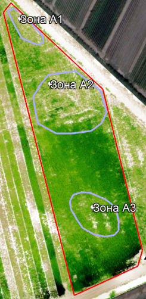
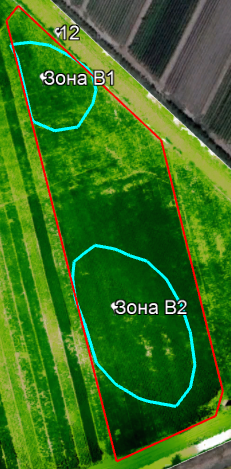
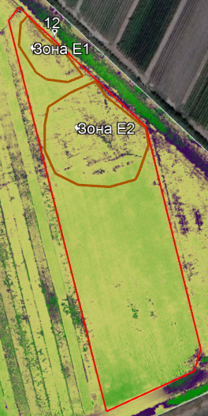

Дата съемки дроном: 15 июля 2022 года
Оценка текущей ситуации
Тип культуры: соя.
Сорт: Baraka (Барака), среднепоздний
Площадь поля: 1,0 Га
Фаза вегетации: V4,V5 (бутонизация)
| Однолетнее | Многолетнее | Деревья | |
|---|---|---|---|
| Этап вегетации | посадка | ||
| прорастание | всходы | сокодвижение | |
| набухание почек - начало бутонизации | набухание почек - начало бутонизации | набухание почек - начало бутонизации | |
| бутонизация | бутонизация | бутонизация | |
| начало цветения | начало цветения | начало цветения | |
| массовое цветение | массовое цветение | массовое цветение | |
| начало плодоношения | начало плодоношения | начало плодоношения | |
| массовое плодоношение - конец вегетации | массовое плодоношение - конец вегетации | массовое плодоношение - конец вегетации | |
| сбор урожая | сбор урожая | сбор урожая |
1. Состояние посевов. Внутри поля (Рис.15) присутствуют пустые участки общей площадью 0,07 га или 7% от общей площади поля, на которых посевы отсутствуют, либо их развитие сильно замедлилось (Зона А1, А2, А3).
Состояние посевов удовлетворительное.
| Состояние посевов | Балл, оценка |
|---|---|
| 5-отлично | |
| 4-хорошо | |
| 3-удовлетворительно | |
| 2-плохо | |
| 1-очень плохо |
|  |  |
2. Дефицит азотного питания до 40% присутствует по всему полю, за исключением двух небольших участков на востоке и западе поля (Рис. 16) (Зона В1, В2).
|  |
3. На поле присутствует значительное количество сорной растительности (Рис.17), которая занимает площадь 0,18 Га или 18% от площади поля (Зона Е1, Е2).
4. По всей площади поля наблюдается недостаток калия.
Рекомендации:
1. Необходима внекорневая подкормка 3% -м раствором мочевины в период с 17- 25 июля.
2. После сбора урожая провести мониторинг поля для составления карты дифференцированного внесения удобрений для подготовки почвы к следующему посеву.
3. Осенью после сбора урожая необходимо внести до 50% от нормы азотных удобрений, калия и фосфора.
4. Возможная дата сбора урожая: 30-31 августа.